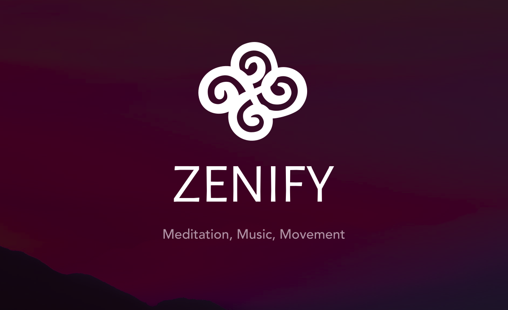
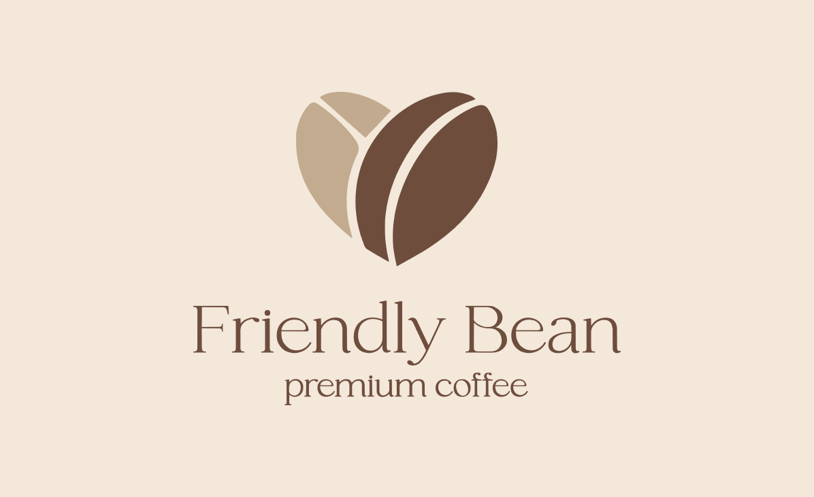
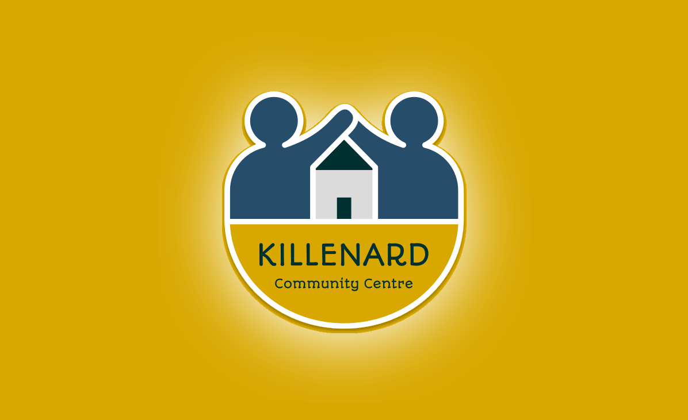

UX / UI / Research
Filí App
A mobile app concept for an Irish-language rhyming dictionary designed to support creative learning, vocabulary retention, and sound-based exploration.
View Project10 projects
Explore my design and web projects across UX, UI, research-led concepts, and front-end development.
UX / UI / Research
A mobile app concept for an Irish-language rhyming dictionary designed to support creative learning, vocabulary retention, and sound-based exploration.
View Project
UX / Interaction Design
A UX and interaction design case study focused on shaping a clearer digital experience through research, user flows, interface design, and prototype thinking.
View Project
UX / UI / Full Stack
A sports performance web application designed to help athletes and coaches track progress, set goals, and analyse results.
View Project
UX / UI / Full Stack
A full-stack Irish-language rhyming dictionary web app with authentication, rhyme search logic, learning games, and community features.
View Project
Research / Front-End / Live Data
An informative public-facing website exploring the case for carpooling in Ireland, supported by public opinion survey data and live data visualisation.
View Project
UX / UI / Full Stack
A web application for outdoor trail discovery and activity tracking, built around intuitive navigation and community-driven content.
View Project
UX / UI Concept
A wellbeing-focused concept across web and mobile, aiming to create calmer, clearer and more supportive digital interactions.
View ProjectUX / UI / Front-End
An AI-assisted lesson-planning concept shaped through research, accessibility thinking, interface design, and product strategy.
View Project
Front-End / Live
A café-style web project combining front-end development with a stronger visual hierarchy and a more polished presentation.
View Project
Front-End / Live / Community
A community website project designed to improve clarity, usability, and access to local information for a public-facing audience.
View Project